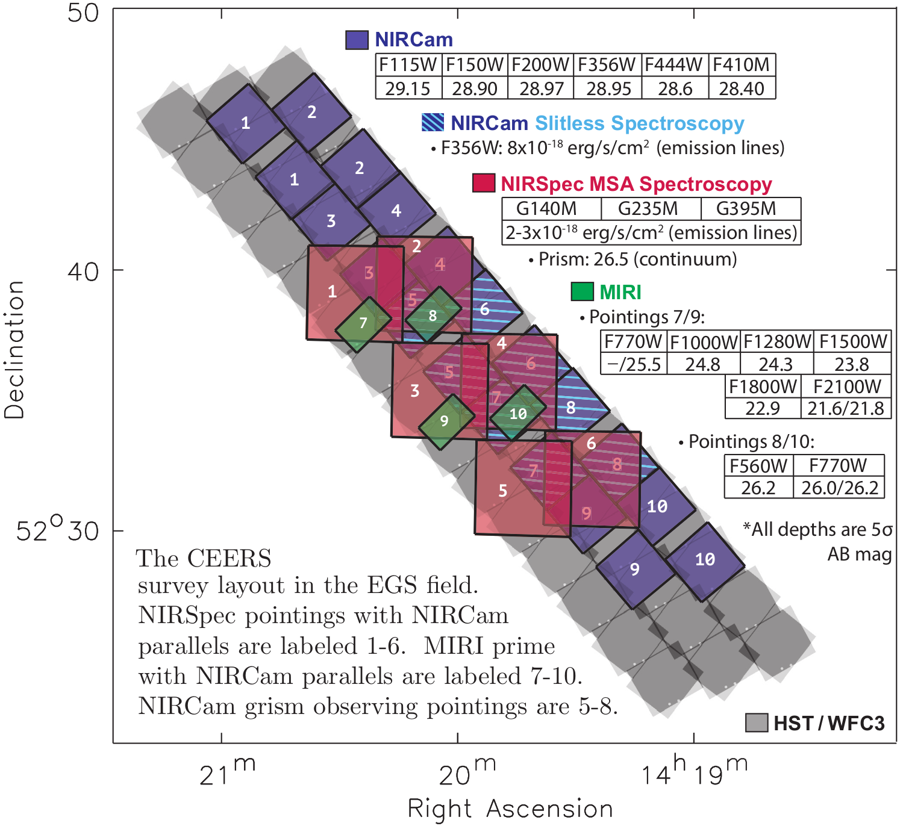

CEERS Project Goals
CEERS will demonstrate, test, and validate efficient extragalactic surveys with coordinated, overlapping parallel observations with the JWST instrument suite. The observations, tests, and data products will pave the way for Cycle 2 observations.
CEERS will also address key JWST science goals, including:
- constraining the abundance and physical nature of galaxies at z~9-13;
- constraining the physical conditions of star-formation and black hole growth via line diagnostics of galaxies at z>3;
- quantifying the first bulge and disk structures at z>3; and
- characterizing galaxy mid-IR emission to study dust-obscured star-formation and supermassive black hole growth at z~1-3
CEERS will therefore enable immediate community science exploring both extragalactic JWST science drivers:
Observing Modes
Mauris neque quam, fermentum ut nisl vitae, convallis maximus nisl. Sed mattis nunc id lorem euismod placerat. Vivamus porttitor magna enim, ac accumsan tortor cursus at. Phasellus sed ultricies mi non congue ullam corper. Praesent tincidunt sed tellus ut rutrum. Sed vitae justo condimentum, porta lectus vitae, ultricies congue gravida diam non fringilla. Cras vehicula tellus eu ligula viverra, ac fringilla turpis suscipit. Quisque vestibulum rhoncus ligula.
Community Products
The CEERS team will provide calibrated images and derived data products to the community in three planned releases. The planned data releases will include:
- Mock raw images and spectra for JWST sources
- Reduced 2D and 1D spectra
- Image mosaics ...
- spectroscopic catalogs: line fluxes, spec-z
- PSF-Matched photometry catalogs:
- release sample of z>9 candidates
- F200W morphology catalogs
- Photometric and spectroscopic catalogs
Pre-Cycle 1:
Using existing CANDELS catalogs and supplemented with simulations, we will generate mock raw images and spectra for JWST sources. Co-Is leading data reduction (and their groups) will use these products to test the pipeline, optimize where possible, and develop workflows for measuring physical quantities. We will produce new HST EGS mosaics and corresponding photometric catalogs, applying significant improvements beyond our earlier CANDELS products, including updated distortion, persistence, and astrometry corrections. The latter is critical for NIRSpec as the CANDELS HST mosaics have median residual distortions as large as 0.1 00 (50% of a MSA shutter width) compared to Gaia. All pre- Cycle 1 science-enabling products, including simulated data and catalogs, modified versions of STScI pipelines, and updated HST images and catalogs will be released to the community by the nominal start of Cycle 1 in April 2019.
Level 1:
We will release best-e↵ort (v0.5) initial reduced NIRCam and MIRI imaging (single drizzled mosaic per filter, aligned to updated HST WCS), and reduced 2D and 1D NIRSpec and NIRCam grism spectra, using the most up-to-date calibration products. The NIRSpec and NIRCam grism spectroscopy will be split into individual 2D and 1D filesper object. Our reduction plan extends beyond the standard STScI pipelines, including our own data quality inspection and corrections for persistence, crosstalk, ghosts, and other artifacts, re-running pipeline steps as needed. We will derive custom background estimation and mas-level astrometric alignment between NIRCam, MIRI, NIRSpec, and pre-existing data. All data products will be submitted to MAST and hosted on the CEERS website.
Level 2
We will re-reduce and release (v1) all CEERS data using available pipeline improvements (e.g., updated calibrations, corrections, etc.). We will create and re- lease 0.5–5 μm photometry catalogs, matching the point-spread function across the HST and NIRCam imaging, and deriving photometry in all bands using NIRCam F356W for detection. We will separately release a PSF-matched MIRI photometric catalog, with F560W+F770W and F1500+F1800+F2100 as the detection images. Our spectroscopic catalog will consist of emission line fluxes and spectroscopic redshifts. This initial spectroscopic catalog will be improved in Level 3 with continually refined slit-loss corrections, and background and contamination removal. We will release our initial catalog of z =9–13 candidate galaxies, and submit a corresponding publication in time for community use in Cycle 2 proposals.
Level 3
The final CEERS release will include: 1) v2 data updated with the latest STScI calibrations and algorithms. 2) v2 spectroscopic catalog (and correspond- ing publication) with application of our empirical slit-loss analysis, and several tabulated emission-line diagnostics (e.g., R23, O32, H↵/H ), and redshifts. We will write a publica- tion detailing our NIRSpec slit loss investigation, and will release all relevant data, including a database of slit loss corrections as a function of wavelength, source size, and distance of object from slit center, and a comparison of this to the pipeline correction values. 3) v2 imaging catalog including all HST, NIRCam and MIRI photometry, and complementary ground-based imaging. We will use the CANDELS-team devised TPHOT software (Merlin et al. 2016) to obtain accurate deblended photometry for every NIRCam-detected object in the MIRI images. This catalog will include photometric redshifts (using EAZY; Brammer et al 2008) and stellar masses and SFRs using custom SED-fitting codes (Papovich et al. 2001; Finkelstein et al. 2015; Santini et al. 2015). We will add F200W-based morphological mea- surements for all NIRCam-resolved galaxies using standard parametric (i.e., n and R e using GALFIT) and non-parametric (i.e., CAS and Gini/M20 using customized scripts developed for CANDELS) measurements.